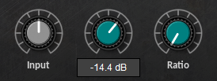
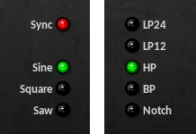
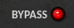
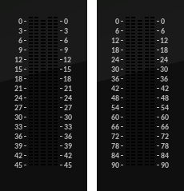

Overview¶
Installation¶
The Dead Duck Free Effects are supplied as individual Windows .DLL files for 32-bit and 64-bit systems. To install simply copy the required files into a VST2 plugin folder recognised by your DAW.
Controls¶
All the effects plugins feature a common set of controls for setting parameters.
Knobs¶
Rotary knobs are used to set continuous parameters and are controlled by mouse-dragging. This may occur in any direction: up/down, left/right or anywhere in between. Press shift while dragging to provide more accurate control. Ctrl-click or double-click to restore the default value.
The actual value of the knob is shown by a pop-up tooltip which will appear whenever the knob is operated. Right-click the knob to view the tooltip without affecting the knob position.
Switches¶
Switches are used to set parameters with a limited number of possible values. Simple on/off switches are coloured red and can be turned on or off simply by clicking the switch. Selectors consist of three or more related options and are coloured green. These appear as a vertical set of switches only one of which will be activated at any time. Select the required option by clicking the corresponding switch.
Bypass¶
All Dead Duck effects include a bypass option. This causes the input signal to be passed directly to the plugin output without being changed in any way. Note this does not deactivate the plugin, it just bypasses the effect’s internal processing chain.
Dead Duck plugins feature a ‘soft’ bypass where the transition between bypassed and active states is implemented as a cross-fade rather than an instant transition. This prevents clicks from being introduced into the signal flow, something that can be very noticeable on effects such as delays and reverbs.
Metering¶
Several Dead Duck plugins include ‘LED’-style level meters used to monitor input, output and other dynamic levels such as gain reduction. In all such meters input is shown as two vertical green bars on the left and output as two vertical green bars on the right. Both input and output meters include red overload indicators warning of potential or actual overload at or above 0 dB. In addition the compressor, limiter, gate and expander plugins (including the channel strips) include orange-coloured gain reduction meters between the input and output displays.
By default the meters range from 0 down to -45 dB. This can be extended down to -90 dB by clicking the number columns either side of the meters.
Global Settings¶
The effects plugins share the following global settings:
Enable +3dB Hard Clip - prevents the plugins from passing any signal that exceeds 3dB even when bypassed.
Note: plugins that include feedback or resonance parameters contain additional overload protection that operates independently of this setting.
Enable Slow Meters - allow meters to be updated at a rate slow enough to be monitored comfortably. In some hosts this can be too slow so disabling this option may be necessary.
Enable Mouse Wheel Support - enable this setting if you want mouse-wheel control over plugin knobs and it is not provided by your host.
Scale to xxx% - set the size of the plugins by selecting an appropriate scaling factor from normal (100%) to double size (200%). After selecting the scale all instances of the Dead Duck plugins must be closed and reopened for the change to take effect.
System Directory¶
The system menu is backed by a system directory which is used to store settings and (optionally) presets. By default the directory is located here:
C:\Users\<username>\AppData\Local\Dead Duck Software\Effects
This is a shared directory and will be used by all instances of the Dead Duck effects plugins.
For portable setups or installations where global settings are undesirable, a local settings directory can be used to maintain a private setup for a specific set of plugins. Create a folder named ‘DD Data’ in the directory in which the plugin DLL files are stored. This will be used to store any data saved by those plugins.